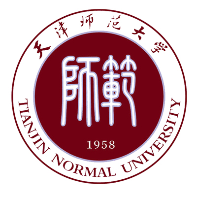
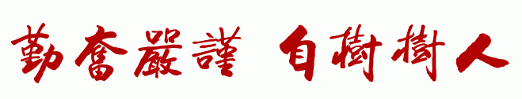
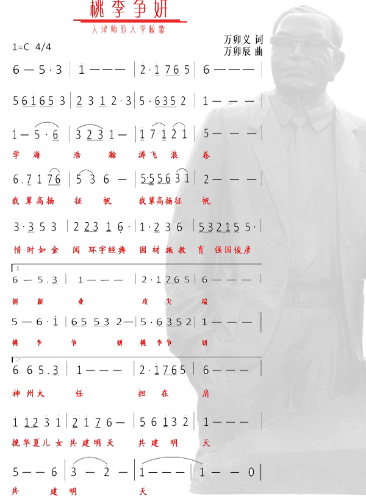

天津师范大学简介

- 天津师范大学是天津市属重点院校，始建于1958年，原名天津师范学院，1982年更名为天津师范大学。1999年，原天津师范大学、天津师范高等专科学校、天津教育学院合并组建新天津师范大学。
- 学校占地面积3500亩、建筑面积86万平方米。2005年，坐落于西青区的天津师范大学新校区正式启用，办学环境得到根本性改善，为学校发展奠定了坚实的基础。
- 学校现有23个学院，68个本科专业，6个一级学科博士学位授权点，29个一级学科硕士学位授权点，13个专业硕士学位授权点，涉及哲学、经济学、法学、教育学、文学、历史学、理学、工学、管理学、艺术学等10个学科门类。学校现有2个国家重点学科，13个天津市重点学科，4个天津市“重中之重”学科，化学学科进入“ESI”排名全球前1%。6个教育部特色专业建设点，16个天津市品牌专业建设点，5个天津市战略性新兴产业相关专业建设点。
- 全日制在校生28237人，其中本科生22696人、硕士研究生3431人、博士研究生286人、专科生1244人，各类留学生2482人。教职工2336人，其中专任教师1364人，拥有正高级职称275人，副高级职称364人，具有博士学位教师740人。
天津师范大学校徽含义
- 圆形校徽寓意和谐，特定红色象征热情奔放。内圆与外圆之间的上半部标有赵朴初同志专为我校题写的“天津师范大学”书法字样，下半部标有英文校名“TIANJIN NORMAL UNIVERSITY”。
- 内圆中嵌有繁写小篆体“师范”二字，既表明“师范”是我校特色，又传承我国传统文化。古语“恭德慎行，为世师范”，“师者所以传道授业解惑者也”。追溯历史，我校是天津一贯传承师范教育特色的地方高校，与天津师范教育百年发展一脉相承，同根同源。
- 师范——二字外形呈方形，与背景的圆形成有机结合，有“天圆地方”之意。以几何学论，圆内接矩形蕴涵着无限的生命力，也应古语：有规矩，成方圆。二字下为数字1958，标明我校创建日期。内外圆的半径比例约为1：1.36。
天津师范大学校训
- 勤奋，就是要勉力学习，毫不间断，有学习的热情;
- 严谨，就是谨慎严密，有一丝不苟、严肃认真的治学方法，也就是有科学的态度，勤奋是热，严谨是冷，这是辩证的关系。
- 自树指教育者先受教育，要严于律己；树人指培养人才为百年大计。要为人师表，严于育人。树人必先自树，自树才能树人。
天津师范大学校歌
